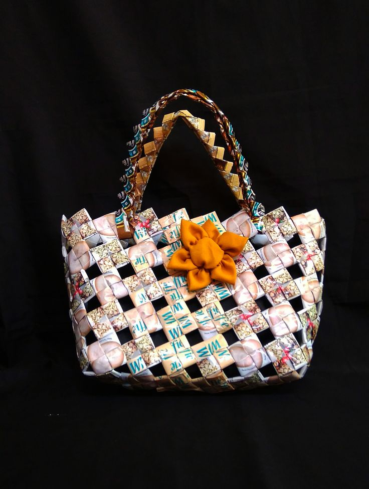
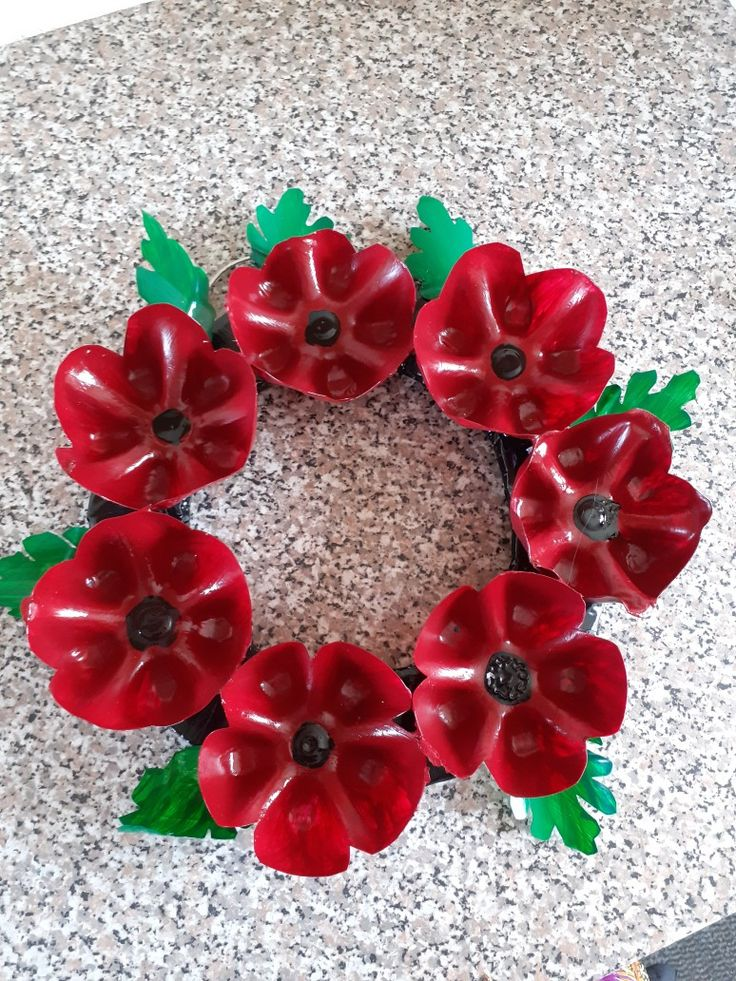
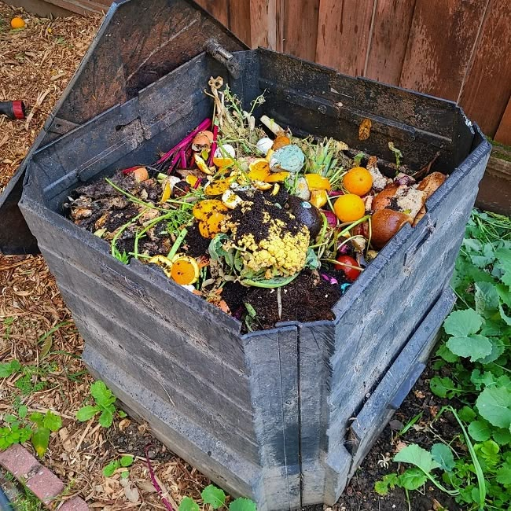
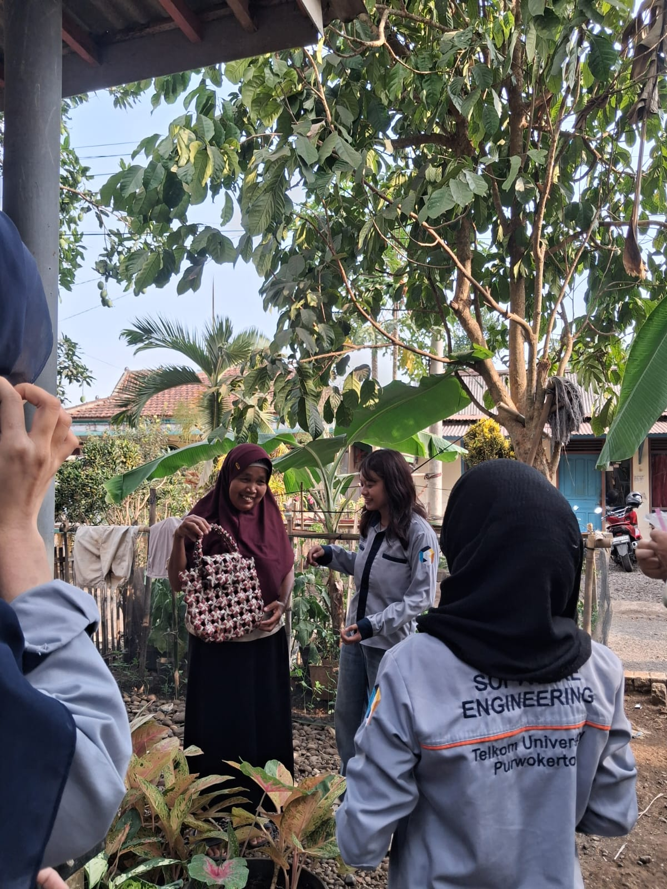
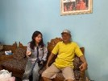

Mengubah sampah yang mengganggu menjadi produk bernilai guna dan peluang ekonomi.

Kerajinan Plastik
Tas dari bungkus kopi sachet
Kreatif

Dekorasi Unik
Bunga dan kitiran dari plastik
Estetik

Pengolahan Organik
Pupuk kompos & Eco-enzyme
Bermanfaat

TENTANG BARDUKARI
Penumpukan sampah di Desa Banjaranyar, Kecamatan Sokaraja akibat terbatasnya TPA mendorong warga mengambil jalan pintas dengan membakar sampah, yang mengganggu kualitas udara dan berisiko bagi kesehatan. Padahal, sampah plastik maupun organik memiliki potensi ekonomi yang besar jika dikelola dengan baik.
Bardukari hadir sebagai website edukasi pengolahan sampah sekaligus platform penjualan digital. Kami berupaya memberikan edukasi untuk mengatasi anggapan warga bahwa daur ulang dan pemasaran digital itu rumit.
6
Anggota Tim Riset
4
Narasumber Warga
100%
Semangat Gotong Royong
Langkah Pengelolaan Sampah
Dari pemilahan di rumah tangga hingga menjadi produk siap jual.
Pemilahan Dasar
Memisahkan sampah plastik dan daun kering agar mudah dikelola dan disetorkan ke bank sampah tanpa harus dibakar.
Proses Kreatif
Mengolah bahan mentah menjadi produk kerajinan inovatif atau eco-enzyme dengan pendampingan dan edukasi berkelanjutan.
Pemasaran Digital
Membuka peluang UMKM lokal dengan memasarkan produk daur ulang melalui platform seperti Shopee agar sesuai perkembangan zaman.
Suara Warga Banjaranyar
Pandangan masyarakat setempat mengenai permasalahan dan potensi sampah di lingkungan mereka.
"Kebanyakan warga kesulitan untuk mengolah sampah karena belum tahu caranya dan kurang mendapat edukasi mengenai pemanfaatan sampah, terutama sampah plastik."

Bapak Sudirman
Warga Banjaranyar
"Sebenarnya kami tertarik mengolah sampah menjadi barang bermanfaat dan bernilai jual, tetapi niat itu belum terwujud karena kurangnya ajakan."
Ibu Rumah Tangga
Warga Banjaranyar
"Niat berjualan secara daring belum terlaksana karena dianggap rumit. Kami mendukung adanya sosialisasi agar penjualan dapat berkelanjutan."